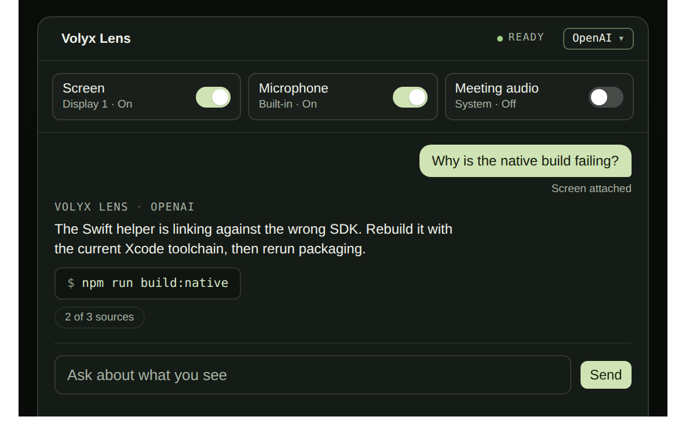

Debug what is on screen
Ask about an error, a diff or a dense document without restating what is visible.
How context is sentDesktop AI · macOS · Windows · Linux (experimental)
Volyx Lens is a desktop AI panel for your screen, microphone and meeting audio. Choose what it can see and hear, then send that to the provider you configured. No Volyx Lens server sits in between.
Detected Linux x64 · AppImage · v0.7.7
Why is the native build failing?Screen attached
The Swift helper is linking against the wrong SDK. Rebuild it with the current Xcode toolchain, then rerun packaging.
npm run build:native2 of 3 sources
Interface preview. This page captures nothing.
01 · The route
Selected context goes to the provider you configured. Volyx Lens runs no relay, and no Volyx Lens server receives it. Session media stays in memory; saved transcripts stay on this device.
02 · What it does
Auto-assist, meeting detection and slide tracking are off by default.

Ask about an error, a diff or a dense document without restating what is visible.
How context is sentSeparate You and Them channels, searchable history on your device, and notes only when you ask for them.
Task Context keeps a small set of screens in local memory and tells you what it left out.
A default and one fallback. The fallback is tried before any text arrives, so two answers are never blended.
03 · Providers
Bring a key for hosted providers. Model availability and charges come from the provider, not from us.
Realtime transcription runs on OpenAI, Azure Foundry, Deepgram or Azure AI Speech. Batch falls back to OpenAI, Gemini or Groq Whisper. Local Whisper ships in the Windows and Linux packages, off by default; the model downloads on first use.
04 · Install
Install it, add a provider, and change providers whenever you want.
Detected Linux x64 · AppImage · v0.7.7
macOS 13 Ventura or later. Windows and Linux builds ship unsigned; every file has a .sha256 checksum and a CycloneDX SBOM. The macOS build will be signed with an Apple Developer ID and notarized once release signing credentials are configured.
05 · Before you install
Drag the app into Applications and try to open it once. On macOS 15 and later, go to System Settings → Privacy & Security and choose Open Anyway. On macOS 13–14, right-click the app and choose Open. xattr -cr "/Applications/Volyx Lens.app" is an advanced fallback. It runs as a panel rather than a Dock app, so there may be no Dock icon; reopen it from Applications. The build is not notarised, so macOS may ask for Screen Recording permission again after an update.
The Windows installer is unsigned. SmartScreen may say "Windows protected your PC"; choose More info and then Run anyway.
Volyx Lens asks api.github.com for the latest release. That request includes your IP address, a user agent, and on signed builds an updater ID. Turn update checks off in Settings → Updates.
Credentials use macOS Keychain, Windows DPAPI, or Linux libsecret/KWallet. If secure storage is unavailable, keys stay in memory for the session and are never written to disk.
With a local Ollama server, responses run offline. Local Whisper covers offline batch transcription on Windows and Linux after you enable it and download a model; macOS supports offline batch transcription when a whisper-server binary is configured.
Capture permissions are explicit, but local consent and recording laws still apply. Do not capture private conversations, protected work, exams or interviews without permission. Capture exclusion is best-effort and never guaranteed.